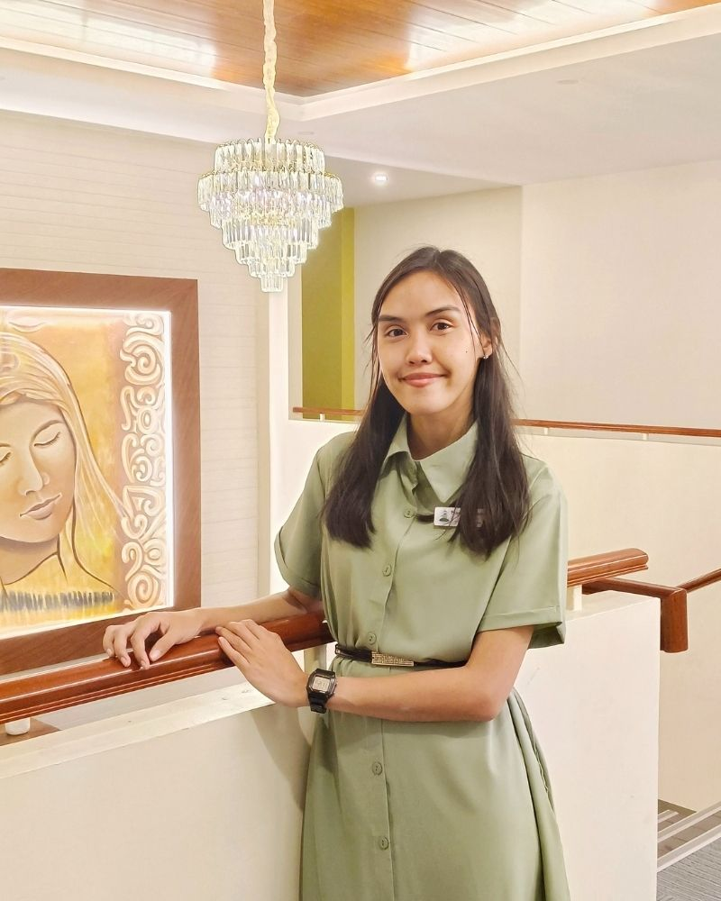

Marielle Honey P. Chiong
About Me
Hi! I'm Marielle, but my close friends call me Yel or Yeyel.
I was born in Cebu City, Philippines, and now live in Ormoc City—famously known as the City of
Beautiful
People!
I served a mission for The Church of Jesus Christ of Latter-day Saints in the Philippines,
specifically in the
Philippines Butuan Mission from June 2018 to January 2020.
In my free time, I love crocheting and watching anime. Just recently, I started reading Atomic
Habits by
James Clear,
and I've picked up a few more self-help books. I'm hoping they'll help me grow and successfully
complete
this course I'm
currently taking.
Ormoc City, Philippines

Located on the western coast of Leyte Island, Ormoc is an independent component city known for its vibrant culture, economic vitality, and scenic beauty. With over 238,000 residents, it serves as the commercial and transportation hub of western Leyte. Despite past challenges like Typhoon Yolanda and Tropical Storm Uring, Ormoc continues to thrive—earning its nickname as the “City of Beautiful People.”